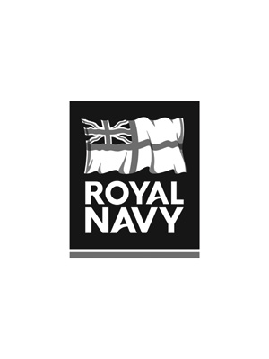
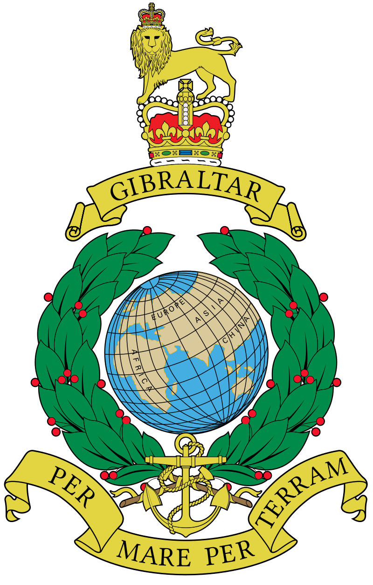
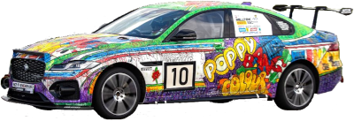

The Armed Forces Community Network (AFCN) Race Team
The brainchild of AFCN member, Murray Paul, the concept for the Armed Forces Community Network Motorsport Team has been years in the making and heavily influenced by the veteran community in Mission Motorsport and the Race for Remembrance. In April 2024, the AFCN Motorsport Committee was born.


Upcoming events:
2026 Race of Remembrance
6th-8th November 2026
Anglesey Circuit Track
The AFCN Race Team Mission
The mission is to provide our people with the opportunity to give back to the veteran Wounded, Injured and Sick community (WIS). WIS benefactors will get hands-on experience of our race team, supporting our pit crew with the hands-on maintenance of our race vehicle, as well having the opportunity to get behind the wheel at race events.
This will raise the profile of the WIS community and generate opportunities to increase their engagement with similar opportunities in the future, further strengthening their bond with the AFCN.
In addition to these aims, our key objective is to have fun as a community.
The Goals
- Our short-term goal is the formal establishment of our team, and competition at the Race of Remembrance event, achieving our mission in full.
- Our long-term goal is to grow. Through our partnership with Mission Motorsport, and the extended AFCN network we are targeting competitions and outreach events to support the veteran community.

Mission Motorsport
Mission Motorsport was launched at Thruxton Motor Circuit on 1st March 2012 with the aim of helping those affected by military operations by engagement through the astonishingly inspirational and healing potential of sport and career opportunities beyond the military.
Motorsport is inclusive, regardless of gender, race, beliefs or disabilities; disabled drivers compete against the able bodied on a level playing field with engineering allowing adaptation of the vehicle, not the sport. This is a leveller and is a strong draw, engaging with hard to reach groups, connecting them with amazing opportunities for second careers, beyond the military.
It's not all racing and fast cars for Mission Motorsport. Seeking post military employment can be daunting and Mission Motorsport understands that with many of the team being veterans or spouses who have made the momentous leap into civvy street.
They are passionate about helping those who are leaving the service, their families and veterans embrace life by accessing guidance, mentorship, training and access to job opportunities and sharing those experiences. Their life experience helps them understand mindsets, aspirations and skillsets and makes them ideally placed to help service leavers and veterans find a job, enabling them to thrive.
Since 2012, the charity has engaged with over 2040+ Wounded, Injured and Sick (WIS) Service Leavers providing over 900 events providing sporting output; assisted 300+ WIS and over 2,000 service leavers find sustainable paid employment.